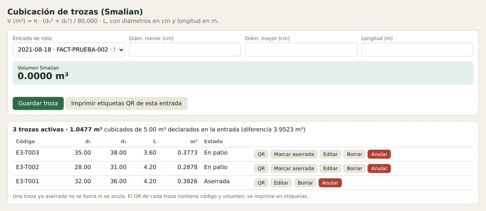
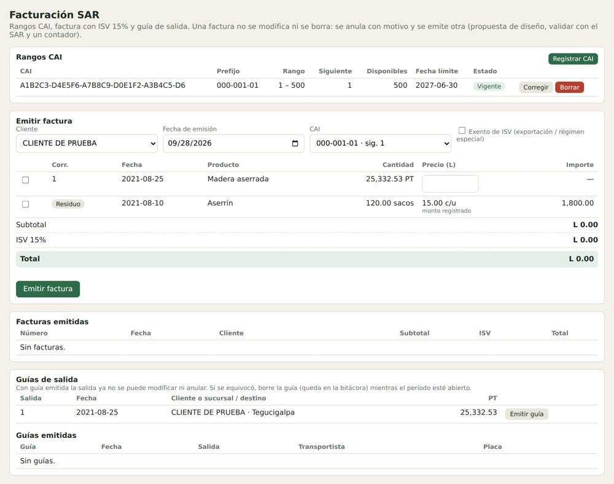
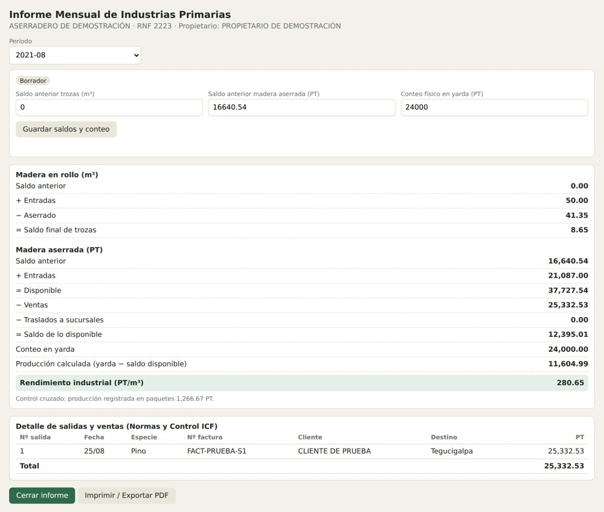

Control de producción y trazabilidad para aserraderos en Honduras: cubicación de trozas, aserrío, paquetes, Informe Mensual para el ICF y facturación SAR. Los datos viven en tu equipo, así que funciona aunque el patio no tenga señal.
Cada módulo registra lo que el aserradero necesita llevar al día, con trazabilidad entre ellos.
Volumen de trozas en m³ con código QR y etiqueta por troza.
Producción y pies tablares por escantillón, con el rendimiento de cada lote.
Disponible, saldo, producción y rendimiento (PT/m³) calculados desde tus registros.
Rangos CAI, correlativo controlado, ISV 15% y guía de salida.
Del ingreso a la salida: proveedor, troza, lote, paquete, tratamiento y despacho.
Estado automático (vigente, por vencer, vencida) con aviso en la pantalla de inicio.
Jornadas, entregas de equipo de protección y planilla con tasas que registra tu contador.
Roles con PIN, anulación con motivo en lugar de borrado y respaldo en un archivo.
Capturas con datos de demostración.



Los datos se guardan en el equipo y no dependen de internet.
Aserradex apoya el registro y la preparación de la información, pero no garantiza por sí solo el cumplimiento normativo. Las reglas de facturación, anulación y planilla deben validarse con el ICF, el SAR y un contador antes de usarse en producción. La facturación electrónica aún no está implementada.
Pruébala con datos de demostración o escríbenos para conocer los planes.
¿Quieres una demostración o coordinar la implementación en tu aserradero?
sedcaf.consultores@outlook.com
Enviar Correo